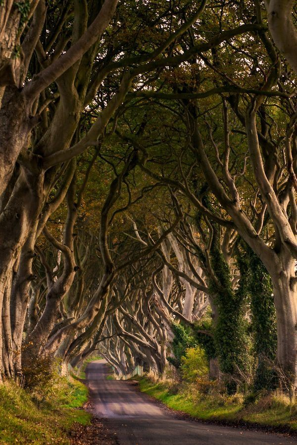

The Dark Hedges
The Dark Hedges is an avenue of beech trees along Bregagh Road between Armoy and Stranocum in County Antrim, Northern Ireland. The Dark Hedges originated in the eighteenth century. The Stuart family planted the rows of beech trees designed to impress visitors as they approached the entrance to their mansion. Two centuries later, the trees remain a magnificent sight and have become one of the most photographed natural phenomena in Northern Ireland. It is said that until now, under the shadow of centuries-old beeches, tourists and passers-by often meet the ghost of the Gray Lady. Her ghostly silhouette slowly glides from tree to tree, and when it reaches the last one, it disappears into thin air without a trace… Locals believe that the Gray Lady is a guest who came to Dark Hedges from an ancient cemetery located nearby. And they also say that on the night of Halloween, the Lady walks along the beech alley not alone, her neighbors in the churchyard join her, and it is categorically not recommended for ordinary mortals to be here at this time. There is also a version that the Gray Lady is the ghost of a Stewart maid who died more than a hundred years ago under unclear circumstances.
